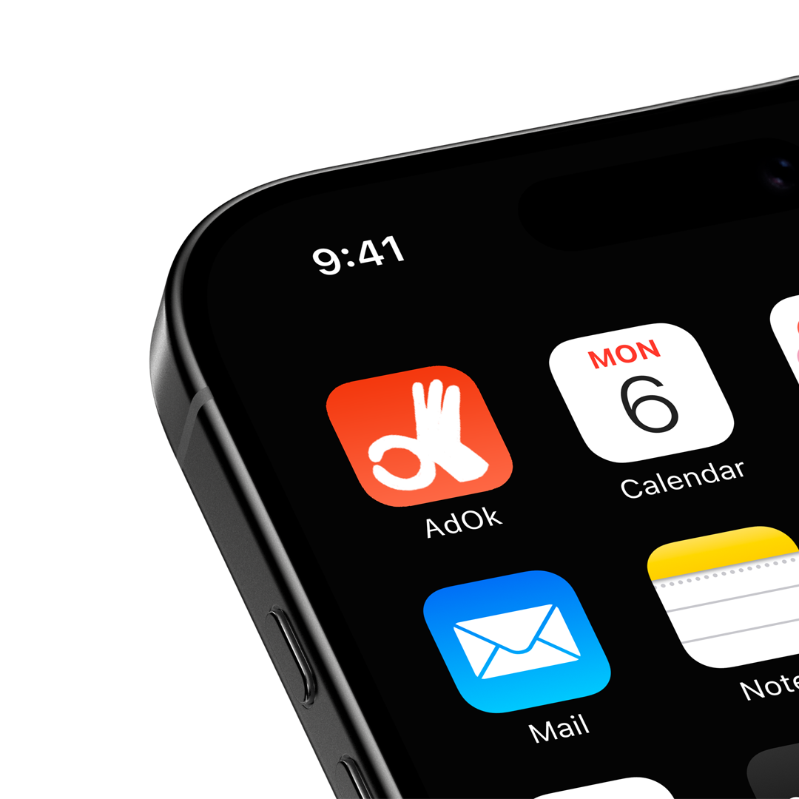
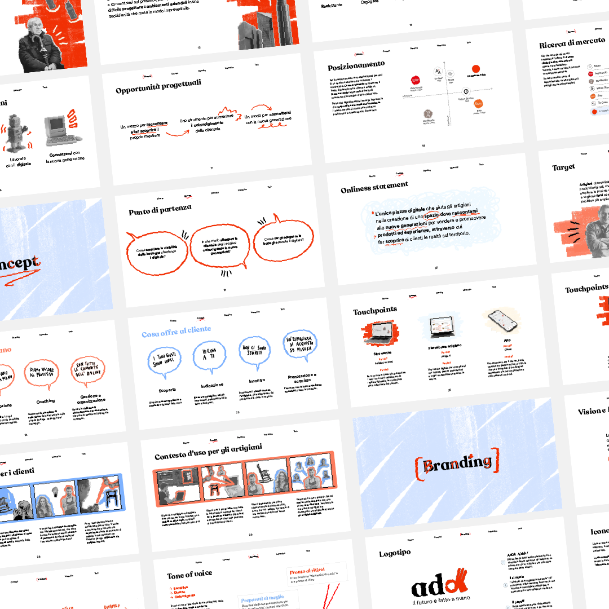

AdOk
Il futuro è fatto a mano! Il nostro progetto mira a connettere le nuove generazioni con gli artigiani locali, attraverso un'applicazione mobile che funge da guida per scoprirli, imparare da loro e acquisire le loro creazioni. L'obiettivo è quello di promuovere il valore dell'artigianato fatto a mano.
La fase iniziale del progetto ha comportato la realizzazione di ricerche sul campo e desk research, che hanno coinvolto numerosi artigiani e potenziali utenti attraverso interviste, form online. L'obiettivo principale di questa fase era quello di raccogliere informazioni e generare idee per acquisire una comprensione completa del contesto. Queste informazioni hanno portato a sviluppare l'idea di AdOk, una piattaforma e-commerce in grado di connettere in modo efficace gli artigiani e il loro pubblico.


Concept
Il futuro è fatto a mano! Il nostro progetto mira a connettere le nuove generazioni con gli artigiani locali.